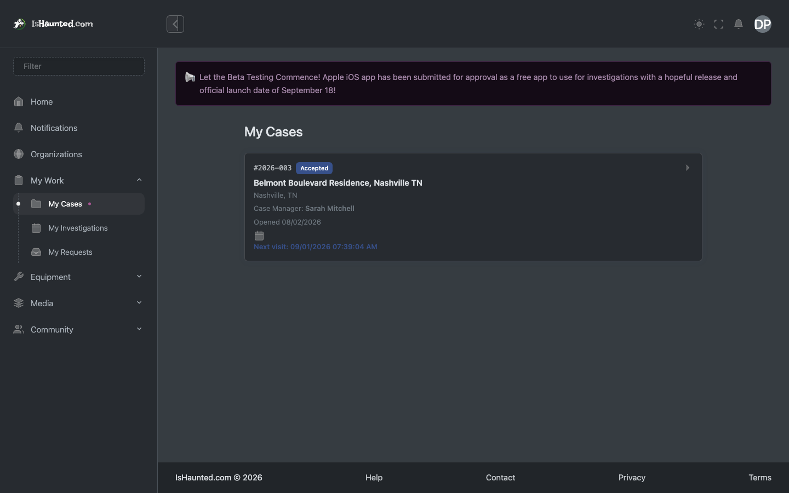
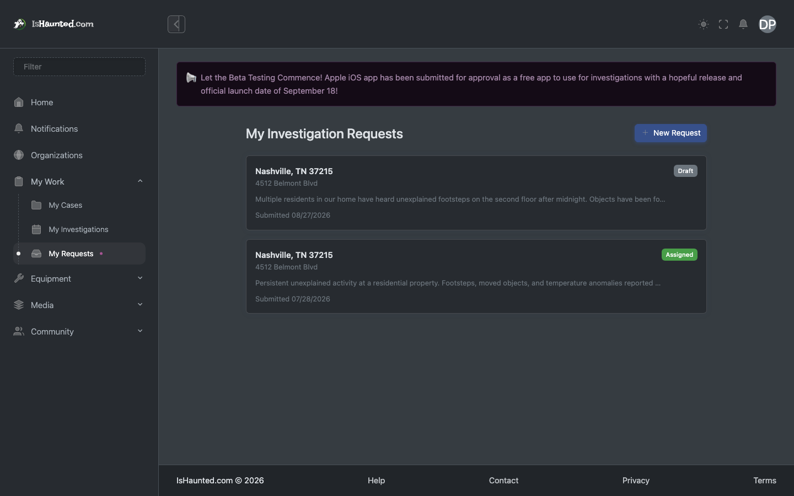
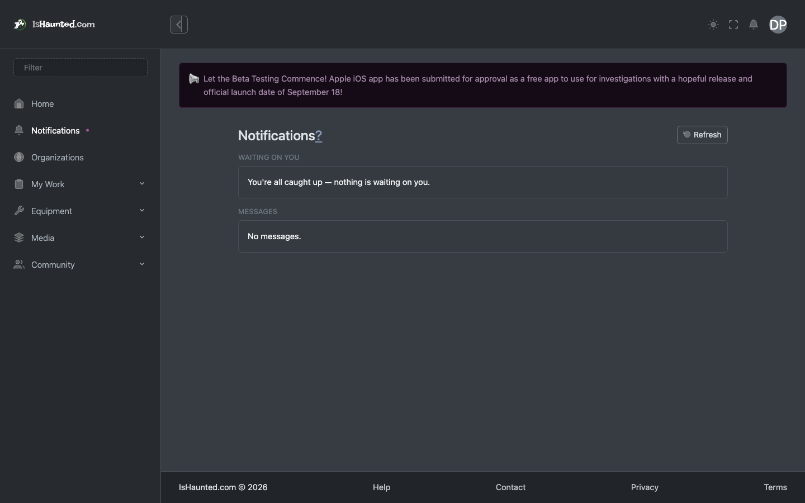
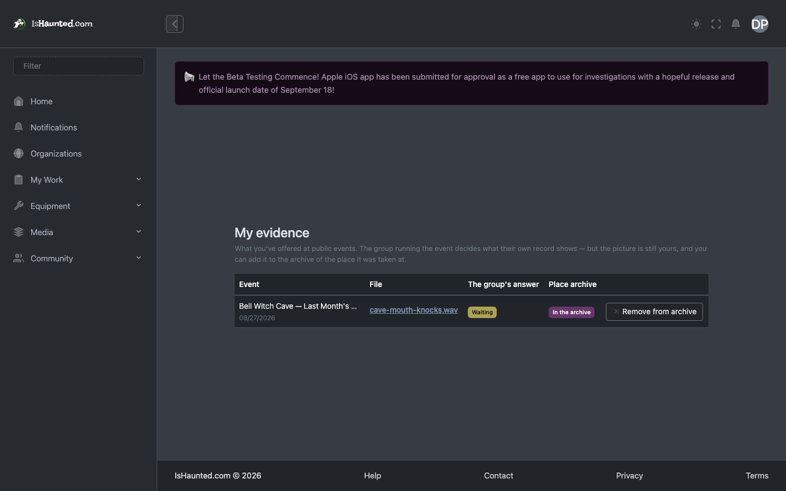
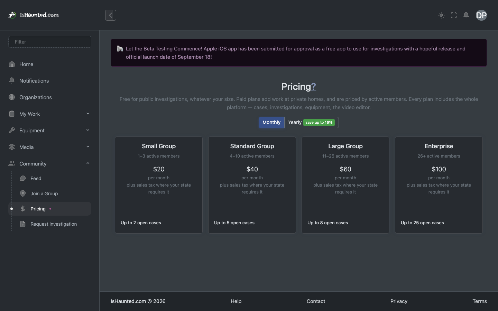
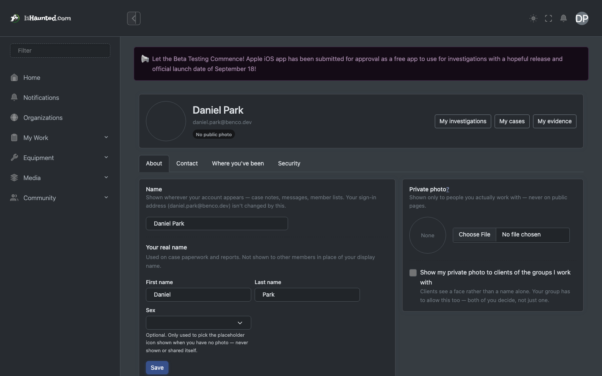
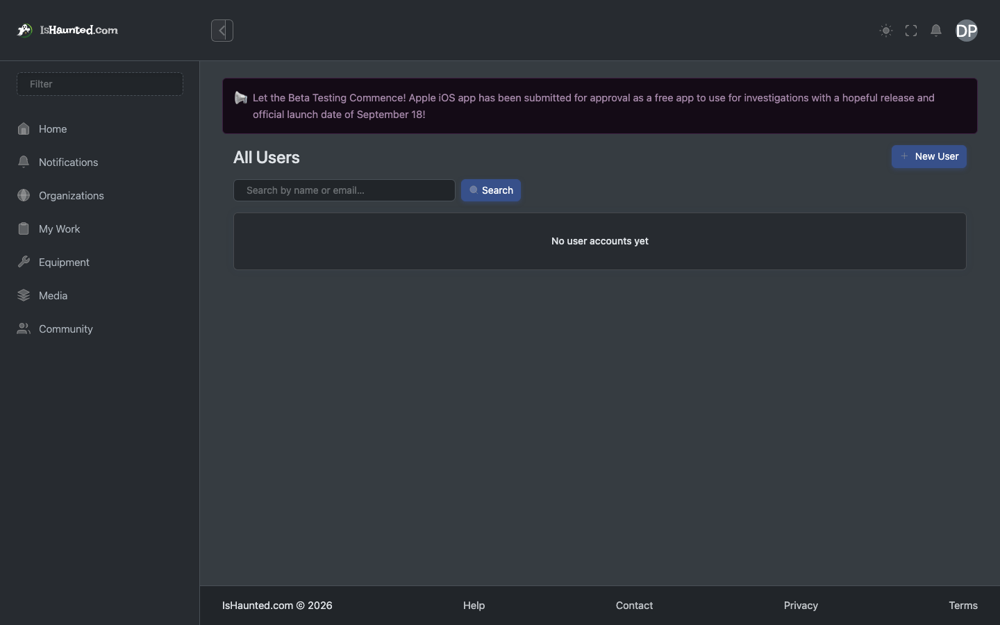

Somebody who asked a group to investigate their home or business. Written for a developer joining the project.
Every screenshot shows simulated, seeded data, captured in dark mode while signed in as this user type. Nothing here is a real person, case or investigation. Where a page shows a refusal, that is the designed behaviour for this seat.
The client is not a member of any group. They have one relationship — with the group working their case — and the site is deliberately narrow for them: their case, their messages, their evidence, and nothing about how the group runs itself.
This is the seat where privacy matters most. A private residence is redacted at display time rather than being stored differently, so what a client sees and what the public sees diverge on every render rather than depending on somebody having remembered to set a flag.
Two things gate every surface, and they are different questions:
Your seat in a group — owner, administrator, member, viewer — answers "may this person do this?". The group's plan answers "does this group pay for this at all?". A member of a group whose plan excludes an area is refused for a completely different reason than a viewer who is not allowed to write, and the site says which.
A refusal is never rendered as "nothing here." An empty list and a server
saying no are different facts, and a page that shows the same grey nothing for both teaches people
to distrust it. Every list goes through LoadResult, which carries loading, empty,
refused, session-ended and rate-limited as distinct states — and every one of them has its own
words on screen.
This matters when reading this document: where a screenshot shows a refusal, that is the designed behaviour for this seat, not a broken page.
My cases. The client's own cases and their status.

My requests. Requests they have made, including ones not yet accepted.

Notifications. What has happened on their case.

My evidence. What they captured or were given a copy of.

Pricing. What the paid plans cover, if they want their own account.

Profile. Their account and contact details.

Refused admin. Administration, refused. The site names the refusal.
